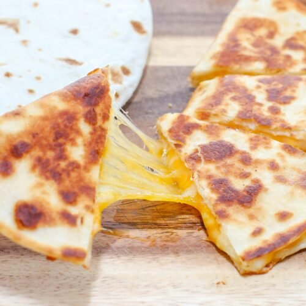

Quesadilla

Description
This recipe describes creating a quesdilla with 2 ingredients (assuming you have a good non-stick pan)
Ingredients
- 2 Torilla
- Choice of Shredded Cheese
Steps
- Heat a non-stick pan to medium-heat
- Place both torilla on the pan and let them crisp on one side, 90 to 120 seconds
- Flip the torillas and immediately add the cheese to one torilla and place the crispy side of one torilla over the cheese
- After the cheese begins to melt and the bottom torilla has crisped, flip and wait for the other torilla to crisp
- Once crisped, remove from pan and enjoy